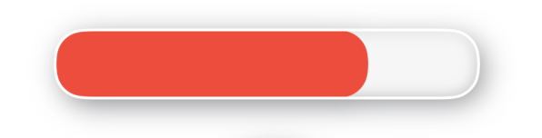
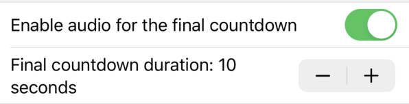

Game Timer App
Game Timer App
About
Features
Privacy Policy
Support
About
Game Timer provides a light-weight, audio-visual interface to a timer you can use while playing games for fun. It is very well suited for games where each team gets a set amount of time.
How is it different from your regular timer, you ask? How about enabling audio for the final countdown in the app. It can be enabled for a few seconds towards the end or for the entire duration. Talk about putting pressure on the team currently playing. In addition, it has a progress bar which changes color depending on how much time has passed. A quick glance will tell you how far along your round has progressed. Just prop-up your device where every one can see and your team will not be wasting time checking on the time left in the round.
Also supports dark mode and multi-tasking functionality (split screen and slide-overs) on iPads.
Features
Simple design
Simple and clutter-free user interface enables the user to quickly glance at your device screen and understand the status of the timer.|
 |
Color coded progress barApp uses the universal traffic signal color coded system. Green is used for the first interval, orange for the second and red for the final interval. | |
|
|
Numerical countdown interfaceIt provides a numerical countdown interface in addition to the progress bar. |
|
|
 |
Final Countdown SettingsApp can be configured to make the ticking audio for the entire duration or just for a few seconds towards the tail end. Audio can also be completely overridden. |
|
|
|
Mute AudioUser can mute or unmute audio temporarily without having to change the settings. |